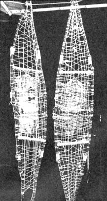

Here's the pair of snowshoes made by Tom Russell. Note how the webbing is interwoven to reduce slipping from side to side where the cords cross. It is important to keep string taut while weaving so that the tension is evenly distributed throughout the shoe.